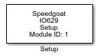

IO629 - Setup
IO629 - Setup — Configure the IO629 IO
module
Library
Simulink Real-Time - Speedgoat

Description
In the current driver version is possible to connect a single IO629 I/O module to
a Speedgoat real-time target machine. The IO629 Setup block is used to establish the
connection.
Ports
This driver block has no input or output ports.
Parameters
Since in the current driver version is only possible to connect a single IO629
I/O module to a Speedgoat real-time target machine, there is no tunable parameter in
the setup block. The input parameter fields are there for future developments.